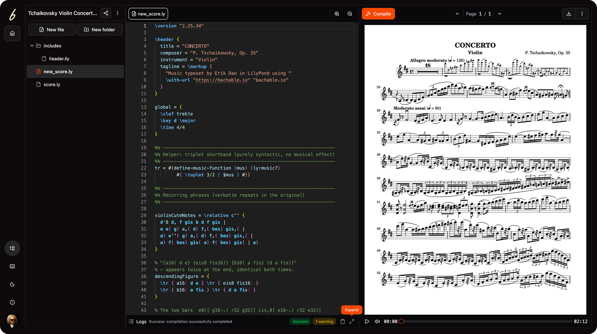
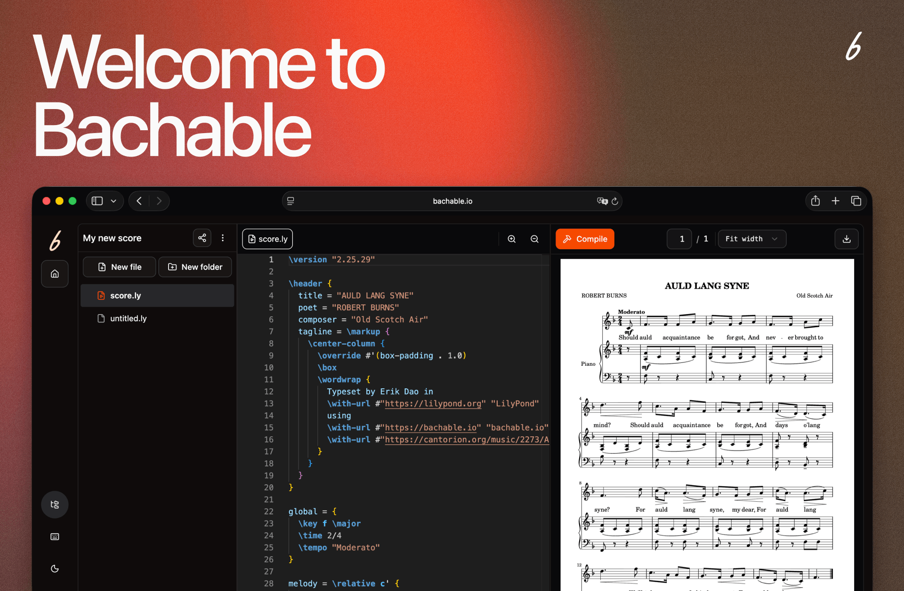
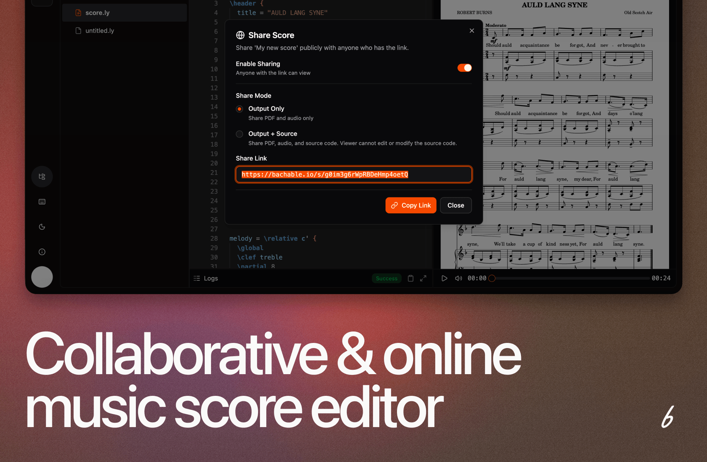
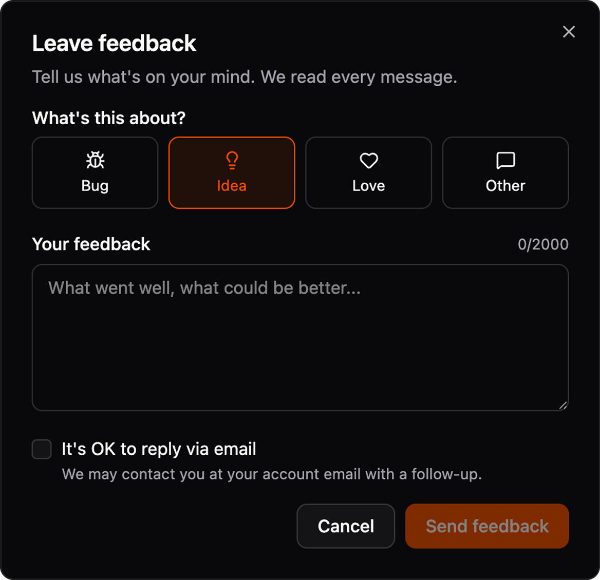
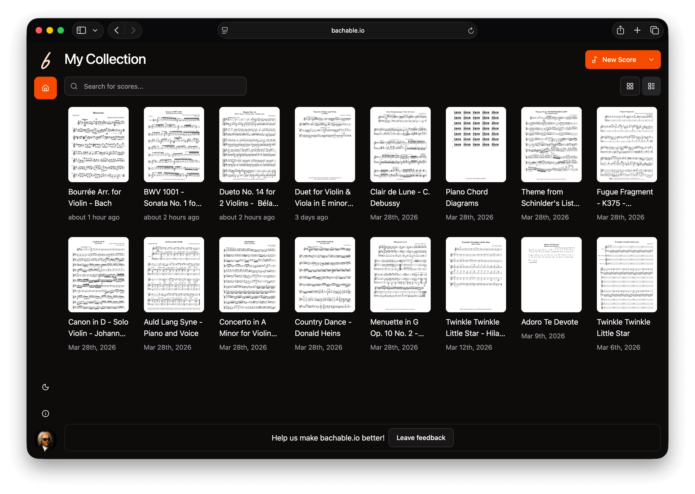
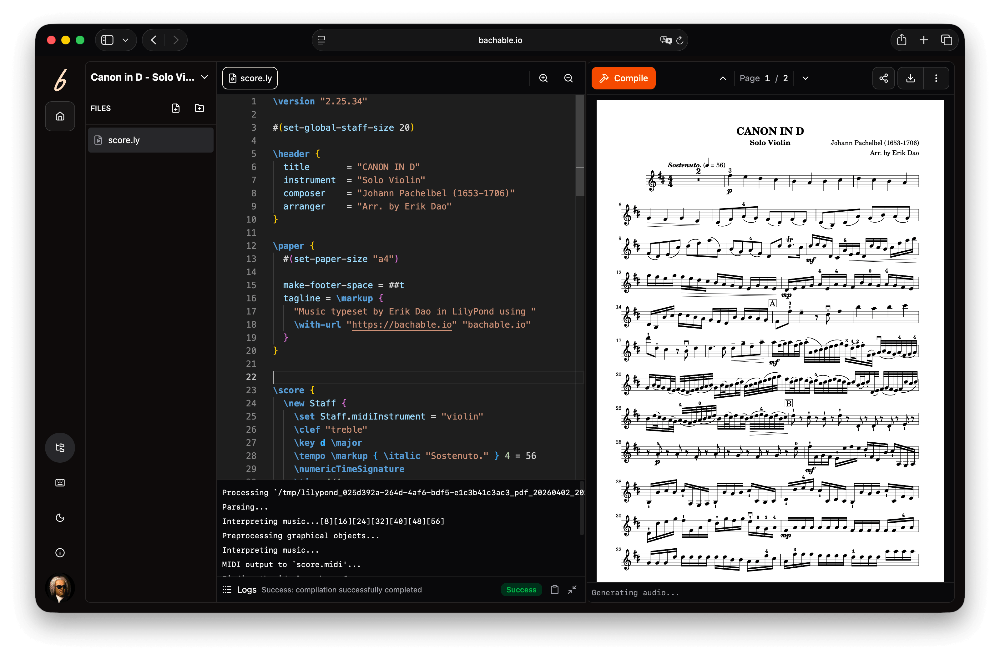

As a founding designer of Bachable.io, I built a design system to give the team a shared foundation from day one: fast to use, consistent in output, and directly connected to the codebase.

Bachable makes music notation with markdown accessible to musicians with no coding experience, so the product needs to feel intuitive from day one.
As a founding team of one designer and one developer, a solid design system meant we could ship and iterate fast without losing consistency.
Collaboration-first music notation powered by LilyPond that allow users to create publication-quality scores from the browsers.


A tiny cross-functional team of 1 designer and 1 developer. With limited resources, speed and consistency were both non-negotiable.
React, Tailwind CSS, and shadcn/ui. The techstack that enables small teams to ship beautiful and usable products fast.
Starting from scratch meant making the right decisions upfront. The first step was scoping what the system needed and how it would connect to the dev workflow.
Spoke with the developer early on how they wanted to consume components, so the system would feel natural rather than imposed.
Selected shadcn/ui: aligned with the React and Tailwind stack, zero adoption friction, and components developer can own and modify directly.
Tokens map semantic decisions (colors, type, spacing, radii, etc) to Tailwind CSS variables. Every choice in Figma maps (to the extent possible) to code. Each color has a role, not just a value. Designer and developer uses the same name, so no back-and-forth needed.
Designer in Figma
Developer in Code
Color token name
color/fg-primary
Color reference
fg-primary
Color token name in Figma
color/fg-primary
Color referenced in code
fg-primary
Primary color
Component name
Button/variant=primary
Component reference
<Button variant="primary">
Component name in Figma
Button/variant=primary
Component referenced in code
<Button variant="primary">
Primary button
The product had a complex UI with the markdown editor, multi-files free and compile logs. New screens were assembled from components, not designed from scratch. Design-to-code required minimal interpretation.
1×
Each decision made once, reused everywhere
0
Back-and-forth on "what shade of orange is this?".
Any
Screen built from the same source of truth


